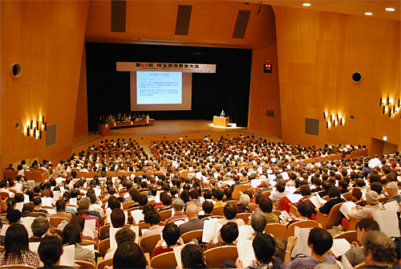

10月21日(火)、1200人が参加し、｢50年の歩みを確信に 平和で安心してくらせる社会をめざして｣をスローガンに、第50回埼玉県消費者大会がさいたま市浦和区の埼玉会館で開催されました。
埼玉県消費者団体連絡会、埼玉県地域婦人会連合会、埼玉県生協連、JA埼玉県女性組織協議会など27団体による実行委員会が主催、埼玉県の後援でおこなわれたものです。
第50回の記念すべき大会となった今大会のオープニングは、現在の消費者大会の前身となった1965年の「埼玉中央婦人大会」（埼玉県地域婦人会連合会と埼玉県主催）からこれまでの50回の歩みを振り返った『50年の歩みを 確信に』の映像上映で始まりました。
最初に柿沼トミ子実行委員長が主催者を代表して挨拶し、ご来賓の上田清司埼玉県知事より挨拶をいただき、岩岡宏保事務局長から｢基調報告、埼玉県への要請｣の提案がありました。引き続き記念講演では、小説家・ノーベル賞作家の大江健三郎さんに｢私の人生を貫いているもの｣と題してお話しいただきました。最後に大会アピールを参加者の拍手で確認し全体会を終了しました。
午後は、「食」「医療・社会保障・くらし・経済」「消費者問題」「環境」「教育・子育て」の5つの分科会に約600名が参加し、50回に相応しい活発な学習・交流がおこなわれました。
 第50回埼玉県消費者大会アピール【PDF：116KB】
第50回埼玉県消費者大会アピール【PDF：116KB】